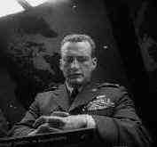

Columbia/196/102m/1.33 and 1.66
The good
doctor is alive and well in the War Room of Stanley Kubrick's off the wall Cold War
satire. Though empires have fallen since Dr. Strangelove, the movie still produces enough
elements of fear to retain its power. In many ways the world is even less predictable.
The film moves at a machine-gun pace as U.S. bombers close in on
targets in the Soviet Union.. Peter Sellers is terrific in three roles as President
Muffley, Wing Commander Mandrake and Dr. Strangelove, while George C. Scott struts and
postures as General Buck Turgidson.
 |
Scott
as Turgidson |
Sterling Hayden is
positively possessed by bodily fluids in his portrayal of General Jack D. Ripper.
Strangelove is presented in the multiple aspect ratios originally
shot by director Stanley Kubrick. Best to ignore them if you can since they do not seem to
add anything to the production. The source material has some errant markings, but
contrasts are good and grain is reasonable on a well set-up system. The soundtrack is
somewhat thin but serviceable.